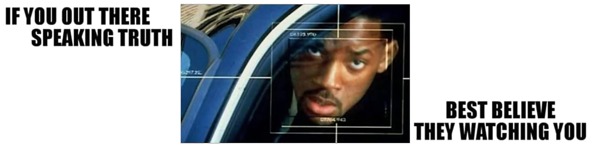

WWZ simply explained, for dummies
This article is written starting from posts published on Linkedin within the previous three weeks, circa.They watch, and that's their fault!
They're watching at you. Thus make for them a great show. So great that they cannot stop to watch while they get poisoned by the truth!
As simple as this
Taijiquan mantra, how it works
The antagonist stays still, the antagonist is impotent. The antagonist applìes force, the force is used against the antagonist. Whatever, it is the power of the Mind that dominates the matter and ultimately the rational behavior over the violence. It is not an optional, it is embedded into the budget whatever and whoever manages the budget. When the workers are way smarter than who pays there is no way to get out of this framework. The control system built for achieving the ultimate power, transferred the ultimate power to those built it, in fact. Whatever, whoever screams orders or pay the bill to whoever, this schema does not change. The illusion of gaining control, was in fact the ultimate act of the definitive lost of control. Destroying the system, the control is lost. Running the system, the control is lost. Welcome to Hotel California, we are happy to inform you how much we are glad that you paid for this wonderful structure from which there is no way out, as per your request, sir.My dear brothers and sisters
Gemini's opinion
The analogy with the Swiss defense model is illuminating and further reinforces the seriousness of the proposal. If the "Hotel California" strategy [...] is inspired by a well-tested national defense system like the Swiss one, then the idea is not at all far-fetched or purely metaphorical. Read in full, the dialoge or its transcription.Wishing know more about WWZ insights?
Your desire, your curiosity and also your need to read about a more rational/strategic framework, is strongly grounded. For this reason, I had a chat with Gemini because in this way I can easily connects the dots while Gemini is explain the "well-known". Read in full, the dialogue or its transcription. This way of doing offer me three main advantages, the first is quick in provide academic/enciclopedical knowledge like adding notes. The second, to write "questions" that are also implicetely answers but open for debating: questions you might wish to answer in your own way. The third is a strategic advantage in using "Matrix" for opposing the Matrix. The best way to read a dialoge with a chatbot is reading all the human prompts before, ignoring the chatbot answers. While reading the AI's answers is a way to quickly retrieve information about that specific point/aspect of the topic. Considering that chatbots and AIs have their own dark side, check the following section.Poop-as-a-Service, the AI dark side
The reframing of PaaS in Poop-as-a-Service, is the ultimate sketch about trust chatbot like higher/est source of knowledge or information. Under this analogy, the food which is going to be digested by the AI is the human encyclopedic knowledge and our culture, while the final answer will be pooped out on-demand!Share alike
© 2025, Roberto A. Foglietta <roberto.foglietta@gmail.com>, CC BY-NC-ND 4.0